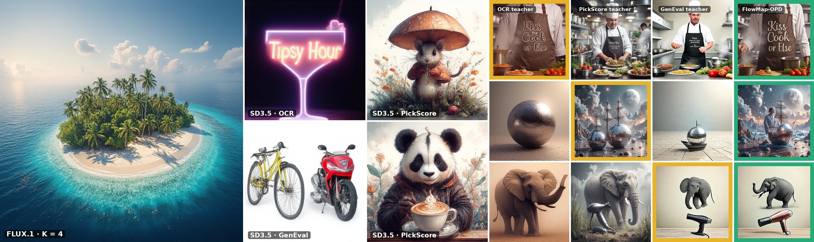
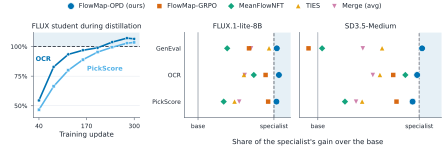
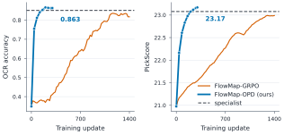
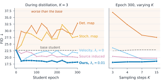
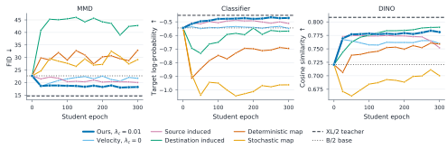
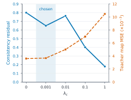

FlowMap-OPD: On-Policy Distillation for Few-Step Flow-Map Generators
1Georgia Institute of Technology2Cornell University
FlowMap-OPD consolidates several specialist teachers into one few-step flow-map student: sample with the flow map, learn the velocity.

- 3 to 1specialist teachers consolidated into one few-step student
- 300updates to match or exceed each specialist on its own benchmark
- 0.883 vs 0.850OCR on FLUX.1: the student against the OCR specialist
- 22.68 to 18.23ImageNet FID with decoupled velocity supervision
One student, three capabilities
Samples from the FlowMap-OPD students on FLUX.1 and SD3.5-Medium: text rendering, visual preference and object relations from the same checkpoint. Select a tile to compare it with the base and the specialists.
Abstract
Few-step flow-map generators, such as MeanFlow and consistency models, sample in a few long-range jumps. On-policy distillation (OPD) trains a student on states drawn from its own sampler, but existing methods compare teacher and student through the local stochastic transitions of a multi-step sampler, which a flow-map student never deploys. We present FlowMap-OPD, the first systematic study of OPD for flow-map students. It separates state collection from supervision: the student collects states with its native few-step sampler, while the teacher supervises the flow map, velocities induced from it, or the instantaneous velocity linked to the map by a separately weighted consistency penalty. We find that instantaneous-velocity supervision with a small consistency weight, our chosen form, transfers the teacher's gains best, whereas supervising the deployed map, although the natural choice, transfers them worst when teacher and student start from different pretrained models. This gives a counter-intuitive rule: sample with the flow map, learn the velocity. As a further benefit, this form applies to any teacher that defines a velocity, including multi-step ones, and to students initialized from multi-step models. On FLUX and SD3.5, a single few-step student consolidates three specialist teachers within 300 updates, matches or exceeds each on its own benchmark (e.g., OCR 0.883 versus 0.850 on FLUX), and outperforms both multi-reward reinforcement learning and LoRA merging.
Gallery
Within a row, every model receives the same prompt, the same initial noise and the same few-step sampler. Gold marks the specialist trained for the row's task, green the FlowMap-OPD student. Selected examples.
Columns: the base, the three specialists and the FlowMap-OPD student. Images are the unmodified 512 × 512 outputs. Use ← → to step through examples; select an image to enlarge it.
Method
FlowMap-OPD separates the rollout from the supervised quantity.


Method details
Rollout–kernel separation
The OPD objective is a sum of local comparisons, so its expectation depends on the rollout only through the state marginals at the comparison times. The rollout can therefore collect states with the student's native few-step sampler, while a separately chosen kernel compares student and teacher there. The kernel that compares student and teacher need not be the transition that collected the states.
Decoupled velocity supervision
A flow-map network offers three quantities to compare: the flow map, velocities induced from it, and the instantaneous velocity. FlowMap-OPD matches the teacher's instantaneous velocity and links it to the map by a consistency penalty with its own weight \(\lambda_c\). The penalty propagates the supervision of the instantaneous velocity to the long-range map the student samples with.
Only decoupled velocity supervision weights consistency separately. All are Gaussian-kernel KLs.
| Supervision | Student | Teacher | Consistency |
|---|---|---|---|
| Flow map | \(\psi^\theta_{t\to r}\) | \(\psi^T_{t\to r}\) | none |
| Induced velocity | \(V^{\theta,\mathrm{src}}\), \(V^{\theta,\mathrm{dst}}\) | \(v^T\) | coupled |
| Decoupled velocity (ours) | \(v^\theta(x,t)\) | \(v^T(x,t)\) | weight \(\lambda_c\) |
Results
Specialist consolidation on two text-to-image backbones, the supervision comparison on ImageNet, and what rollout–kernel separation provides.
One student matches three specialists
An OCR teacher, a PickScore teacher, and a GenEval teacher are consolidated into one native few-step student in 300 updates.

Distillation against reward training
In a two-reward experiment, FlowMap-GRPO flattens below both specialists by update 1,400, while the distilled student is above both at update 300.

Which quantity should the teacher supervise?
On ImageNet, with XL/2 MeanFlow teachers distilled into B/2 students, decoupled velocity supervision transfers best and flow-map supervision transfers worst.



Tables
One student matches three specialists
FLUX.1-lite-8B, \(K=4\), update 300, \(\lambda_c=0.001\). Task scores, higher is better.
| Model | GenEval | OCR | PickScore |
|---|---|---|---|
| Base | 0.504 | 0.349 | 20.98 |
| Task-specialized teachers | |||
| GenEval teacher | 0.845 | – | – |
| OCR teacher | – | 0.850 | – |
| PickScore teacher | – | – | 23.08 |
| One model for all three tasks | |||
| FlowMap-OPD (ours) | 0.858 | 0.883 | 23.15 |
| with deterministic map | 0.825 | 0.834 | 22.95 |
| with stochastic map | 0.821 | 0.833 | 22.97 |
| FlowMap-GRPO | 0.733 | 0.795 | 22.92 |
| MeanFlowNFT | 0.635 | 0.717 | 21.69 |
| TIES | 0.823 | 0.652 | 21.99 |
| Merge (sum) | 0.638 | 0.619 | 21.48 |
| Merge (avg) | 0.742 | 0.657 | 22.12 |
SD3.5-Medium with a pretrained flow-map checkpoint, \(K=4\), update 300. Task scores, higher is better.
| Model | GenEval | OCR | PickScore |
|---|---|---|---|
| Base | 0.726 | 0.569 | 21.69 |
| Task-specialized teachers | |||
| GenEval teacher | 0.868 | – | – |
| OCR teacher | – | 0.912 | – |
| PickScore teacher | – | – | 23.52 |
| One model for all three tasks | |||
| FlowMap-OPD (ours) | 0.872 | 0.905 | 23.40 |
| FlowMap-GRPO | 0.713 | 0.824 | 23.11 |
| MeanFlowNFT | 0.732 | 0.865 | 22.18 |
| TIES | 0.816 | 0.779 | 22.49 |
| Merge (sum) | 0.667 | 0.543 | 21.54 |
| Merge (avg) | 0.789 | 0.755 | 22.38 |
Which quantity should the teacher supervise?
XL/2-to-B/2 students at epoch 300 with native \(K=3\) sampling. Each reward is a separate teacher and student, evaluated with that teacher's metric. Among students: best in bold.
| Supervision | MMD | Classifier | DINO | |
|---|---|---|---|---|
| FID ↓ | FID50k ↓ | log py ↑ | Cosine ↑ | |
| B/2 base | 22.68 | 13.34 | −0.545 | 0.721 |
| XL/2 teacher | 14.68 | 3.86 | −0.453 | 0.808 |
| Flow-map supervision | ||||
| Stochastic map | 27.89 | 15.03 | −0.962 | 0.700 |
| Deterministic map | 32.84 | 19.20 | −0.696 | 0.759 |
| Induced-velocity supervision | ||||
| Source induced | 20.04 | 8.22 | −0.512 | 0.752 |
| Destination induced | 42.74 | 28.66 | −0.568 | 0.790 |
| Decoupled velocity supervision | ||||
| \(\lambda_c=0\) | 21.72 | 9.56 | −0.548 | 0.760 |
| \(\lambda_c=0.01\) (ours) | 18.23 | 6.74 | −0.472 | 0.781 |
| \(\lambda_c=0.1\) | 21.05 | 9.21 | −0.538 | 0.768 |
| \(\lambda_c=1\) | 43.07 | 29.56 | −0.671 | 0.020 |
What rollout–kernel separation provides
- Training rollouts are short. A \(K=4\) rollout takes five network evaluations, and students trained with \(K=3\) or \(K=2\) rollouts match the \(K=4\) student.
- Any teacher with a velocity. With the public multi-step Flow-GRPO specialists as teachers, FlowMap-OPD trains a few-step student with five evaluations per rollout; Flow-OPD with the same teachers spends twenty.
- Students from multi-step models. Initialized from the multi-step SD3.5-Medium weights with an added second time input, the student comes close to the few-step student in 300 updates.
Fewer rollout jumps suffice. SD3.5-Medium, update 300, sampled with \(K=4\); NFE per rollout, time to collect 1,152 rollouts (8 H100).
| Training rollout | NFE | Time | GenEval | OCR | PickScore |
|---|---|---|---|---|---|
| \(K=10\) | 11 | 40.0 s | 0.864 | 0.901 | 23.42 |
| \(K=4\) (default) | 5 | 22.9 s | 0.872 | 0.905 | 23.40 |
| \(K=3\) | 4 | 19.6 s | 0.865 | 0.898 | 23.37 |
| \(K=2\) | 3 | 16.2 s | 0.866 | 0.897 | 23.34 |
Teachers and students need not be flow maps (SD3.5-Medium, update 300, sampled with \(K=4\) unless noted; NFE per rollout). Rows with multi-step teachers share the public teachers.
| Teachers | Student | Train NFE | GenEval | OCR | PickScore |
|---|---|---|---|---|---|
| Few-step | Few-step | 5 | 0.872 | 0.905 | 23.40 |
| Few-step | Multi-step | 5 | 0.837 | 0.897 | 23.20 |
| Multi-step | Few-step | 5 | 0.895 | 0.828 | 22.83 |
| Flow-OPD, same teachers | 20 | 0.853 | 0.790 | 22.32 | |
| The same two students with fewer sampling steps (\(K=3\), then \(K=2\)) | |||||
| Multi-step | Few-step | 5 | 0.862 | 0.760 | 22.59 |
| Flow-OPD, same teachers | 20 | 0.734 | 0.577 | 21.70 | |
| Multi-step | Few-step | 5 | 0.741 | 0.532 | 21.78 |
| Flow-OPD, same teachers | 20 | 0.355 | 0.157 | 20.11 | |
BibTeX
@article{li2026flowmapopd,
title = {FlowMap-OPD: On-Policy Distillation for Few-Step Flow-Map Generators},
author = {Li, Zhiqi and Wan, Cheng and Zhu, Bo},
journal = {arXiv preprint arXiv:2609.37851},
year = {2026}
}